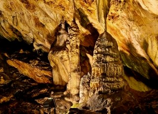
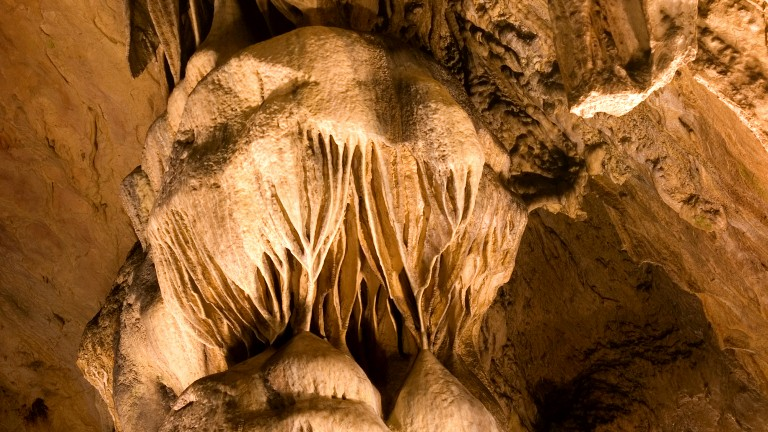
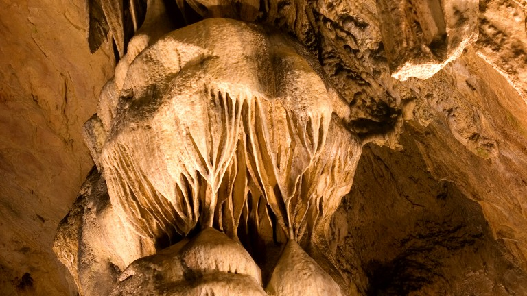

“Магурата” е една от най-големите пещери в България. Намира се в най-северозападните части на страната, във Видинска област. Образувана е в хълм край с. Рабиша, чието име е взела и Рабишката могила (461 м надморска височина). Старославянското име на хълма е Магура, което дава названието на пещерата. Тя го пресича от югозапад на североизток, а изходът извежда до просторна площадка с открита гледка към голямото тектонско езеро – Рабишко езеро, което е най-голямото по площ вътрешно езеро в България, чиято дълбочина достига 35-40 м. То предлага идеални условия за сърф, плуване, лов и риболов и е една от предпочитаните туристически дестинации.
Общата дължина на откритите галерии в пещерата „Магурата“ е около 2500 метра и заема площ от около 28 600 кв.м. Има постоянна температура от 11 – 12 градуса. Морфологичната структура на пещерата се характеризира с дълга главна галерия, в протежението на която са образувани 6 зали, някои от които са високи над 25 м. Странично от главния коридор са разположени още 3 зали.
Според геоложки проучвания образуването на пещерата Магура е започнало преди около 15 млн. години. В една от залите са разкрити праисторически рисунки, издълбани в скалата и изрисувани с прилепно гуано (тор). Фигурите изобразяват танцуващи женски силуети, танцуващи и ловуващи мъже, маскирани хора, животни, звезди, оръдия на труда, растения. Рисунките датират от различни епохи – епипалеолит, неолит, енеолит, начало на раннобронзовата епоха. Слънчевият годишен календар от късния неолит, открит там, е най-ранният слънчев календар, открит досега в Европа. Той е изрисуван по стените на залата светилище и на него са отбелязани поне 5 празника, както и 366 дни.
Пещерата притежава едни от най-богатите по форма и размери образувания – сталактити, сталагмити, сталактони, синтрови джобчета, пещерни бисери, „пещерно мляко”. С внушителни размери впечатлява „Големият сталактон” с височина над 20 м и диаметър на основата 4 м. „Падналият бор” е най-големият сталагмит в изследваните български пещери с дължина над 11м и диаметър в основата 6 м.
Пещерата се използва и за производството на шампанизирано вино, което отлежава при естествени условия, сходни с тези, използвани при производството на френско шампанско. Снимането с фотоапарати и камери в Магурата е позволено.
 
